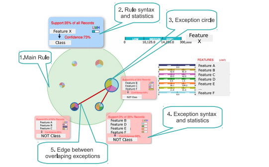

Interactively Visualizing Summaries of Rules and Exceptions

Rules along with their exceptions have been used to explain large data sets in a comprehensible manner. In this work we present a novel hierarchical view of the rules and exceptions in a bubble layout.
Demo Publication